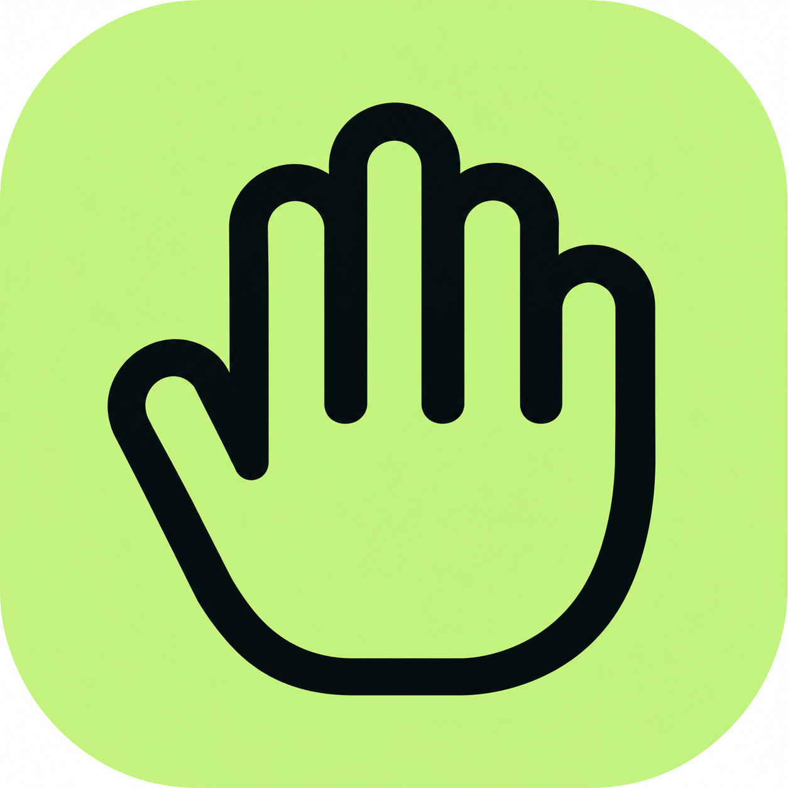

Yu Xiang ↗
Scientific Founder
Building robot intelligence that connects perception with action.Assistant Professor at UT Dallas; previously NVIDIA, Stanford, and the University of Washington.

AllHandsROBOTICSINTELLIGENCE BEYOND A SINGLE ROBOT
AllHands helps robotics teams turn human and robot demonstrations into reusable training data and build manipulation skills that transfer across hardware.
Starting with data conversion and robot-ready datasets.
01 / THE PROBLEM
Different robots use different action spaces, embodiments, and datasets. A skill learned on one robot cannot easily transfer to another, making robot data fragmented and expensive to scale.
Separate hardware. Separate data. Separate learning.
02 / THE TECHNOLOGY
Our unified action representation provides a common interface across different robot embodiments, enabling skills and data to transfer between them.
Our technology builds on UHAS, Unified Hand Action Space ↗, our research on learning shared manipulation skills across substantially different robotic hands.
03 / ALLHANDS PLATFORM
We’re starting with data conversion and robot-ready datasets. The goal is to adapt existing human and robot demonstrations to the hardware a team is training. We’re also exploring bare-hand teleoperation pilots for collecting new demonstrations.
Over time, we aim to train robot foundation models on shared manipulation data and deploy the skills they learn across different robots.
04 / TEAM + CONTACT
We build the perception, action, and data systems that help robot intelligence move beyond a single embodiment.
Scientific Founder
Building robot intelligence that connects perception with action.Assistant Professor at UT Dallas; previously NVIDIA, Stanford, and the University of Washington.
Co-founder / CEO
Leads business and product development.Builds tools that help different robots share manipulation skills.
Co-founder / Technical Lead
Leads software and model development.Builds tools that turn videos of people handling objects into robot training data.
Tell us what robot you’re building and what manipulation data you’d like to collect or reuse.
contact@allhandsrobotics.com